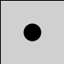
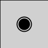

There are only a few UML symbols associated with activity diagrams.

There is the “initial pseudostate, represented by a solid black circle. This isn't really a state in iteself, and it
marks the start of the state diagram, where all states will stem from.
 Next there are arrows, which show the transitions connecting states. Optionally, they can be
labeled with trigger events, actions, and or guards.
Next there are arrows, which show the transitions connecting states. Optionally, they can be
labeled with trigger events, actions, and or guards.
Then, there are the state nodes themselves, represented by rounded rectangles labeled with their respective states.
Optionally, the second half of the state node can be filled with the "do-activity" for activity states.

Finally, the final node is a solid black circle outlined with a black ring, and that marks the end of the state diagram. There are no more transitions available at this point.
By then, the process should have reached an expected conclusion.